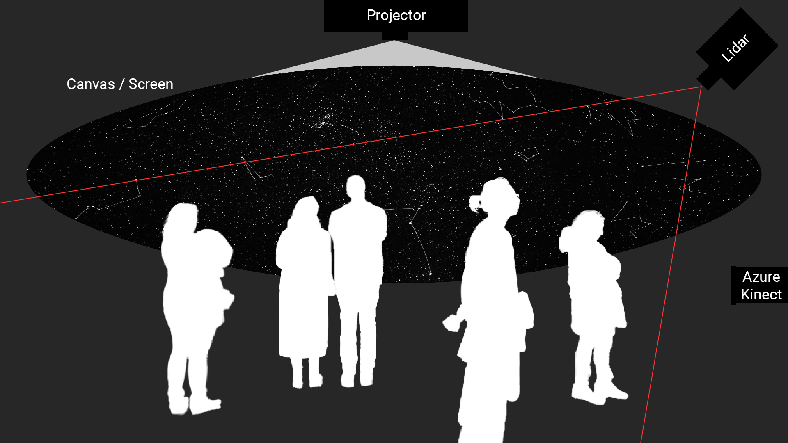

Embodied Interaction—Tino Selic
Course Documentation
How to paint Virtual Auroras via an Interactive Programme
1. Gesture Assignment
Last updated 08.10.24
In this group work, our team had to think about a gesture that we use in our everyday life. This gesture should then be used for a concept of a gestural interface. We chose to work with the hand gesture used to improve hearing when trying to listen closely. We then thought about a narrative and came up with a story about an encaptured snake that is revealed by doing the gesture. On a wall there is a projection of a grey and noisey video, the audio is distorted and quiet too. When doing the hand gesture, a spotlight is casted onto the caged snake and audio and video become saturated and clear.
2. Final Project: Proposal
Last updated 08.10.24
A starry night sky is projected onto the ceiling of a dark space. Depending on the position of the visitor in the space, star constellations temporarily appear and reform when the visitors move. If a visitor stands in a certain spot, they can then use their hands to paint northern lights on the sky.

In TouchDesigner I plan to create the starry night sky with small white glowing circles that appear on random positions and random sizes. I will track the positions of multiple people (Lidar?) and capture their coordinates in certain time intervals. I will then convert this data into specific star constillations by connecting certain stars with lines. To make them appear and disappear smoothly, I need to work with opacity transitions and delays.
The painting of the northern lights could be realised with a blurry colorful brush that follows the controller's
hand. It only draws on the sky, when the controller does a painting gesture by pinching their index finger and
thumb together (like holding a pen). For this I need to track the positions of the painter's fingers, detect the
painting gesture and then spawn shapes on the tracked positions. The paintings of the northern lights will
slowly disappear after a while to clear the canvas for new painters. To realize this I will need to kill the
shapes after a certain time (delay, opacity). I also plan to let the painter control size (z-position) and color
(movement speed) of the brush.
Challenges: Location & Setup, Precise Tracking, Authentic Visuals
3. Final Project: Prototyping
Last updated 30.03.23
I decided to focus only on creating auroras and abandon the idea of creating star constellations, since auroras are more exciting and they seem easier to realize.
This video helped me create an interactive prototype that draws a trail of the mouse cursor. I would later replace the position of the mouse cursor with the tracked data from the Azure Kinect.
To achieve a visually authentic Aurora effect, our tutor Calvin recommended me this video where I learned about feedback loops in TouchDesigner.
In the feedback loop, I added a transformation node so that the auroras would slowly move up (continuously decreasing the y-values) and slightly wiggle left and right (noise on x-values). Blur nodes enhanced the look by making everything smoother, especially the hard line of the trail. After watching reference material, Calvin and I noticed vertical streaks appearing in real auroras. Calvin helped me add animated noise in x-orientation to simulate those streaks. Lastly, I colored the auroras by using a ramp node with a vertical gradient of colors from white to green and red with decreasing alpha levels. I then connected everything together via composition nodes and multiply functions.
The result was quite convincing as the visuals already resembled auroras. However, some improvements were still needed. The colors should be less saturated, and the gradient and streaks should only affect the trail and not the entire screen.
4. Final Project: Tracking with Azure Kinect
Last updated 30.03.23
The next step was to replace the mouse cursor tracking with the Azure Kinect, which is capable of tracking hands. I followed Matti's tutorials on the course website to properly set up blob tracking with the Kinect in TouchDesigner. The tracking was quite jumpy and I had to do adjustments to deal with hard edges that appeared, when the tracking of the hands stopped and started at a different position. With Matti's helped I then switched to skeleton tracking as it turned out to be the better method for the setup I have chosen.
5. Final Project: Final Setup and Presentation
Last updated 12.04.23
In the last week before the final presentation, I did final audiovisual adjustments, installed the Azure Kinect
with Calvin's help on the scaffolding of the presentation room and calibrated everything to the new setup. I
added a subtle animation to the stars in the background by multiplying the brightness of the starry night image
with animated noise. I also found a nice royalty-free piano song that matched the calm atmosphere of the
installation.
When all the students in the course gathered for my presentation, I faced a problem I hadn't thought of before.
I've only ever tested my setup with one person - me. So when the room was filled with about 20 people, Azure
Kinect didn't know which person to track. As a result, I couldn't properly demonstrate how to paint the auroras.
However, auroras would occasionally appear randomly - just like in real life. This happy little accident showed
me room for improvement.